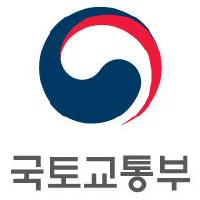

안심하고 머무는 주거 안식처, 매일 출퇴근길을 가볍게 하는 대중교통(K-패스·GTX), 초연결 도로망과 미래를 앞당기는 도심항공교통(UAM) & 자율주행까지 국토교통부가 함께합니다.
내 집 마련 안심망
공공분양 & 디딤돌 대출
대중교통비 최대 53% 환급
전국 버스·지하철·GTX
수도권 30분대 출퇴근
초연결 교통망 구축
하늘길 & 미래도시
디지털 신성장 동력
자신의 상황을 선택해보세요. 지금 바로 받을 수 있는 알짜 정책 혜택을 골라드립니다.
살기 좋은 집, 편리하고 안전한 길, 그리고 첨단 모빌리티 미래까지 국토교통부의 손길이 닿아있습니다.
청년, 신혼부부, 고령자 등 국민 누구나 안심하고 살 수 있는 보금자리를 마련하고 전세사기 피해 방지에 총력을 다합니다.
전국 어디서나 편리하게 이용하는 대중교통망을 확충하고, 대중교통비 최대 53% 환급으로 서민 가계 부담을 덜어줍니다.
출퇴근 30분 시대를 실현하는 수도권광역급행철도(GTX)와 전국 고속철도망 및 지하고속도로를 연결합니다.
국민의 안전한 하늘길 여행을 보장하고, 인천국제공항 4단계 확장 및 지역 균형발전을 위한 거점 공항을 만듭니다.
하늘을 나는 도심 항공 교통과 레벨4 완전자율주행, AI로 교통과 재난을 예측·해결하는 지능형 스마트시티를 구축합니다.
노후 교량·터널 등 사회기반시설을 선제 점검하고, 부실시공 방지와 건설현장 무사고 안전망을 구현합니다.
퀴즈를 풀고 유용한 국토교통 혜택을 배워보세요.
"K-패스는 시내버스와 지하철뿐만 아니라, 신분당선이나 수도권광역급행철도(GTX)를 탈 때도 적립·환급을 받을 수 있을까요?"
복잡한 정책과 행정 절차를 알기 쉽게 답변해 드립니다.
원하시는 서비스로 안전하게 연결해 드립니다.